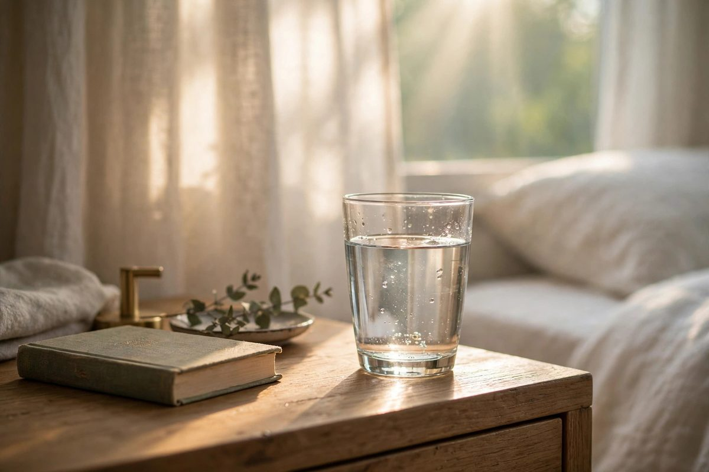

Morning Hydration Habits
Why the first glass of the day matters, and how to build a morning drinking habit that lasts.
You wake up mildly dehydrated every morning, because you lose water overnight through breathing and sweating and you take in none for seven or eight hours. The first glass of the day is therefore the most valuable one, and the habit of drinking it sets the tone for the whole day. This guide explains why mornings matter and how to build a habit that sticks.
Why you wake up dehydrated
Overnight, you lose roughly 300 to 500 ml of water through breathing, sweating and the small amount of urine produced during sleep. That is why your mouth feels dry in the morning and your urine is darker than at other times of day. The loss is normal, but it means you start the day with a deficit, and replacing it early helps you feel alert and think clearly. A glass of water on waking is the simplest way to do it.
The first glass
Drink a glass of water, about 250 ml, as soon as you wake up, before coffee or breakfast. Keep a glass or bottle by your bed or in the bathroom so the habit needs no decision. Some people prefer warm water with lemon, and that is fine, though the lemon adds nothing essential. The point is the water, not the ritual around it. If you take medicines in the morning, take them with a full glass of water, which helps the habit and the medicine.
Building the habit
Habits stick when they are tied to something you already do. Put the glass where you cannot miss it: next to your toothbrush, on the bedside table, or by the coffee machine. Do it at the same point every morning, such as immediately after getting up or while the kettle boils. After a week or two, it becomes automatic, and you will reach for the glass without thinking. If you forget, do not try to catch up by drinking a lot at once; just have a glass with breakfast and carry on.
Morning drinks beyond water
Coffee and tea in the morning count towards your fluid intake, and there is no need to avoid them. A milky coffee adds calories, so count it as a small snack if you are watching calories. Fruit juice adds sugar, so keep it small. The best morning pattern is water first, then coffee or tea if you enjoy it, then water with breakfast. That gives you two glasses before you leave the house, which is a strong start on the day's target.
Mornings for different routines
If you exercise in the morning, drink a glass on waking and another 30 minutes before you start, because you will sweat during the session. If you have a long commute, take a bottle with you. If you fast in the morning, water is still fine and helps with hunger. The habit adapts to the routine, but the principle stays the same: replace the overnight loss early, and the rest of the day is easier.
A morning routine in five minutes
Build the morning habit in five minutes. The night before, fill a glass or bottle and put it by your bed or next to the toothbrush. When you wake, drink it before anything else, while the kettle boils or the shower runs. Then have your usual coffee or tea, and a glass of water with breakfast. That is two glasses before you leave the house, and the habit is anchored to things you already do: waking, boiling the kettle, and eating breakfast. After two weeks, the glass is automatic, and you will reach for it without thinking. If you forget one morning, do not try to catch up by drinking a lot at once; just have a glass with breakfast and carry on.
Frequently Asked Questions
Should I drink water first thing in the morning?
Yes. A glass on waking replaces the water lost overnight and helps you feel alert.
How much water should I drink in the morning?
A glass of about 250 ml on waking, plus water with breakfast, is a good start — two glasses before you leave the house.
Does coffee in the morning count?
Yes, coffee and tea count towards fluid intake. Drink water first, then enjoy your coffee.